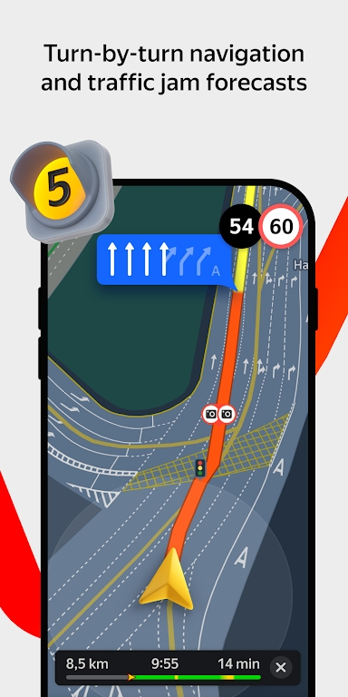

Yandex Maps 免费版够用吗？算一算 Yandex Plus 会员这笔账
Yandex Maps 本身免费无广告，但深度绑定的 Plus 会员（299₽/月）在加油等场景有返现。不同使用强度下到底值不值，这篇给你掰扯明白。
开头直接抛问题
我在俄罗斯生活了三年，Yandex Maps 是每天都开的 App 之一，安装包直接从官方下载拿的。但有个问题我纠结了好几个月：要不要为 Yandex Plus 会员每月掏 299 卢布？ Yandex Maps 本身是免费的，没广告、无内购，功能够日常用。但 Plus 会员在合作加油站加油能返积分，积分又能抵扣打车、外卖、电商……这笔账到底怎么算？
这篇就以一个认真掂量过值不值的付费用户视角，把定价拆解、使用强度分档、替代方案、最终结论一条条列出来。看完三秒能对号入座。

定价拆解：免费版给什么，付费版多什么
先把边界划清楚，别混在一起算。
Yandex Maps App 本身：完全免费，官网明确说明无任何付费墙
这一点要先讲透——你不花一分钱，就能用上：
- 驾车导航（实时路况、多条路线对比、语音播报）
- 步行导航（楼梯标注、地形坡度、室内楼层地图）
- 公共交通换乘规划（地铁、公交、电车、小巴，实时车辆位置追踪）
- 地点搜索（餐厅、加油站、ATM、药店……带用户评分和照片）
- 离线地图下载
- Alice 语音助手（俄语/土耳其语模式下功能完整，英语只有基础语音搜索）
- 应用内加油支付（直接付油费，不用下车排队）
免费版的这些功能没有使用次数限制、没有配额、没有水印广告。我用了三年，唯一见过的"商业化"痕迹就是地图上加油站图标旁边会标个小 $ 提醒你"这里用 Plus 会员有返现"——仅此而已。
Yandex Plus 会员：299 ₽/月，是 Yandex 全家桶的通行证
Plus 不是 Yandex Maps 的专属会员，而是 Yandex 整个生态的跨产品会员。在 Yandex Maps 里，它只解锁一个核心福利：合作加油站每升油返 2 ₽ 积分。
Yandex Maps 对接的合作加油站超过 8000 个，覆盖俄罗斯所有主要连锁（Rosneft、Lukoil、Gazprom Neft、Surgutneftegas、Tatneft），完整的加油站列表可以在Yandex Maps 文档里查。非合作加油站也能在 App 内导航过去，但不能线上支付、也没有 Plus 返现。
积分的用处不止在 Maps——可以在 Yandex Taxi 打车抵扣、Yandex Food 外卖抵扣、Yandex Market 电商抵扣，相当于一种通用消费返现。换算成折扣率的话，每升油返 2 ₽ 大概是 2-3% 的折扣（俄罗斯汽油价格在 50-60 ₽/升浮动）。
算账：三类人各自的使用场景
定价看明白之后，关键是你一个月加多少油。我按三种典型使用场景算。
轻度用户：偶尔开车，每月加油 50-80 升
典型画像：住在莫斯科地铁覆盖密集区，大部分时间公交通勤，只有周末或特殊情况才开车出门。一个月加两三次油，每次 30-40 升。
这笔账很清晰：
- 每月总加油：约 70 升
- Plus 会员返现：70 × 2 = 140 ₽
- 会员费：299 ₽
- 净亏损：159 ₽
还不如不买。 多花 159 卢布换 140 卢布的返现，纯粹倒贴。而且轻度用户的加油频率低，可能一个月都跑不到合作加油站，返现额还会更低。
主力用户：日常通勤，每月加油 200-300 升
典型画像：上下班开车、偶尔自驾游，是 Yandex Maps 导航功能的高频用户。单程 20-30 公里，一个月下来油费是固定支出。
算一笔保守账：
- 每月总加油：约 250 升
- Plus 会员返现：250 × 2 = 500 ₽
- 会员费：299 ₽
- 净赚：201 ₽
而且这还是只算加油返现。如果你用 Yandex Taxi 偶尔打车、Yandex Food 点外卖，积分还能继续抵扣。实际收益比 201 ₽ 高。
这类人值得买。 每升油省 2 ₽，积少成多，会员费在第二个月就能"回本"。
重度用户：长途频繁跑，每月加油 500+ 升
典型画像：职业司机（网约车、货运）、经常跨城市出差的生意人、喜欢周末自驾游的狂热分子。Yandex Maps 是他们每天开十几个小时的工具。
这种场景下就不是"值不值"的问题了，而是"不买等于送钱"：
- 每月总加油：按 500 升保守算（实际往往更多）
- Plus 会员返现：500 × 2 = 1000 ₽
- 会员费：299 ₽
- 净赚：701 ₽（实际可能是 1500+ ₽）
闭眼付。 这已经不是折扣，是相当于给你一张长期返现卡。而且重度用户的加油点高度集中在合作连锁加油站，返现命中率接近 100%。

替代方案：不付这笔钱有什么别的路
你可能会想：Yandex Maps 的加油功能有返现，那我直接用加油站自己的会员卡行不行？或者换个组合拳？
方案一：只用合作加油站的自家会员卡
俄罗斯主要加油站连锁（Rosneft、Lukoil）都有自己的会员体系。比如 Lukoil 的 Kart Club，每升油最高返 5 ₽（比 Plus 的 2 ₽ 更猛）。但问题是：
- 你得同时办好几张卡，分别在不同加油站用
- 返现规则各卡不一样（有的是消费满额才返、有的是积分不能直接抵现）
- 积分的使用场景单一（只能在该加油站体系内用）
Plus 会员的优势是一张卡通吃 8000 多个加油站，返现规则统一，积分能在 Yandex 全家桶里通用。如果你主要在 1-2 个连锁加油，用加油站自家会员卡可能更划算；但如果你换着加油，Plus 的灵活性好很多。
方案二：Google Maps + 加油站 App 组合
Google Maps 在俄罗斯能用，但实时路况数据不如 Yandex Maps 精准——Yandex 的数据采集了本地公交、出租车、用户上报的路况，Google 更多依赖匿名手机位置数据。加油支付功能 Google Maps 没有，得单独装 Rosneft 或 Lukoil 的 App。
如果你平时导航主要靠公交和步行，Google Maps 步行导航的地形坡度数据可能比 Yandex Maps 更全（Yandex 的坡度覆盖仅限俄罗斯、白俄罗斯、哈萨克斯坦、塞尔维亚、土耳其）。但驾车导航这块 Yandex Maps 在俄罗斯本土是碾压级的。
方案三：降低使用频率
这听起来有点奇怪，但如果你恰好卡在轻度用户和主力用户的边界（每月加油 120-150 升），可以试试"凑整加油"——比如每次加油跑到合作加油站再加，非合作的就顺路绕过去。这样返现命中率从 50% 提升到 100%，成本立刻划算。
结论：哪类人闭眼付，哪类人再等等，哪类人永远不用付
最后帮你把自己归到哪一档：
- 每月加油 ≥ 200 升：闭眼付。会员费 299 ₽，返现至少 400 ₽，稳赚不亏。要是你还顺手用 Yandex Taxi 或 Yandex Food，那 Plus 会员就是白送的。
- 每月加油 120-200 升：再等等。这个区间刚好在盈亏线附近，建议先记录一个月加油量，算清楚返现额再决定。或者试试"凑整加油"策略，把非合作加油站的加油量挪到合作站。
- 每月加油 < 120 升：永远不用付。这个使用强度下，Plus 的返现还不够覆盖会员费，免费版的 Yandex Maps 完全够用。把钱省下来不如给车换个好点的空调滤芯。
还有一个边界情况值得提：如果你用 Yandex Taxi 打车很多，那 Plus 会员的权重会发生变化——积分在 Taxi 里的抵扣比例比加油更高。我个人的情况是通勤开车、偶尔打车、常点外卖，三个场景的积分加起来，Plus 会员的实际成本接近零。这才是它最有吸引力的地方。
Yandex Maps 本身的免费版已经够好——导航精准、功能完整、无广告，完全没有"付费解锁核心功能"的鸡贼设计。要不要付这笔钱，纯粹看你的消费行为能否覆盖会员费。别为了一个可能用不上的功能提前掏腰包，但也别让返现白白浪费在加油站门口。这些关于 Yandex Maps 的资料在 GitHub、Gitee 和 GitCode 上都有维护，方便不同网络环境的朋友查阅。